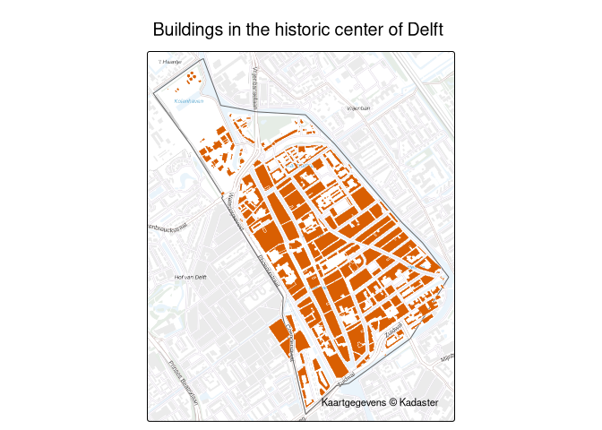

pdokr makes it easy to work with open geographic data from PDOK (Publieke Dienstverlening Op de Kaart), the national geodata platform of the Netherlands. It helps you discover datasets and their layers, load a layer as an sf object (with automatic pagination and explicit coordinate reference system handling), filter data by any polygon area, and geocode addresses and place names.
pdokr is a client for PDOK’s OGC API Features services: it reads vector feature data (points, lines, polygons) as sf. Raster, tile, and coverage services are out of scope. For the official PDOK map background, use pdok_basemap().
Installation
You can install the development version of pdokr from GitHub with:
# install.packages("devtools")
devtools::install_github("coeneisma/pdokr")Example
Pick an area from the administrative boundaries, then load another layer within it. Here we take the historic centre of Delft and map every building in it.
library(pdokr)
library(tmap)
# A municipality, and one of its districts (the historic centre of Delft)
gemeenten <- pdok_read(
"cbs/gebiedsindelingen", "gemeente_gegeneraliseerd", datetime = 2024
)
delft <- gemeenten[gemeenten$statnaam == "Delft", ]
wijken <- pdok_read(
"cbs/gebiedsindelingen", "wijk_gegeneraliseerd", datetime = 2024,
filter_by = delft, predicate = "within"
)
binnenstad <- wijken[wijken$statnaam == "Wijk 11 Binnenstad", ]
# Every building in that district, from the TOP10NL topography
buildings <- pdok_read("brt/top10nl", "gebouw_vlak", filter_by = binnenstad)
# Map it
tmap_mode("plot")
tm_basemap(pdok_basemap("grijs")) +
tm_shape(binnenstad) +
tm_borders(col = "grey40") +
tm_shape(buildings) +
tm_polygons(fill = "#d95f02", col = "white", lwd = 0.4) +
tm_title("Buildings in the historic centre of Delft") +
tm_credits("Kaartgegevens © Kadaster")
The articles on the package website walk through this and other workflows, with interactive, zoomable maps.
Learn more
See the package website for the reference documentation and articles on getting started, filtering data by area, working with coordinate reference systems, and querying PDOK by hand.